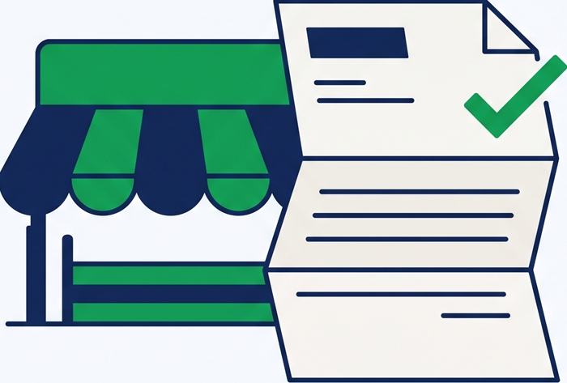
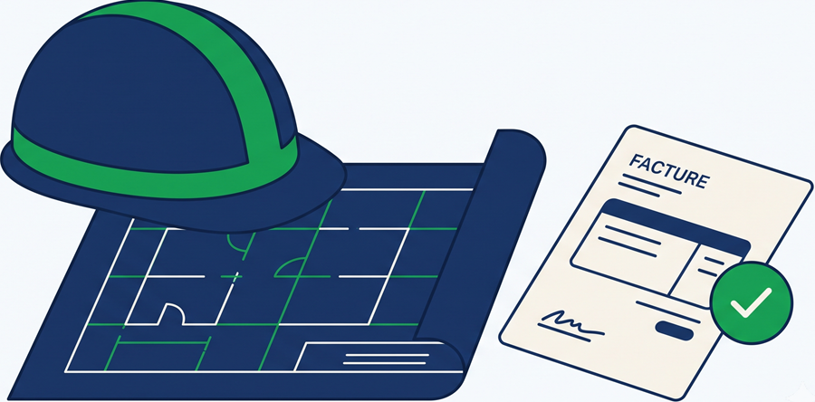
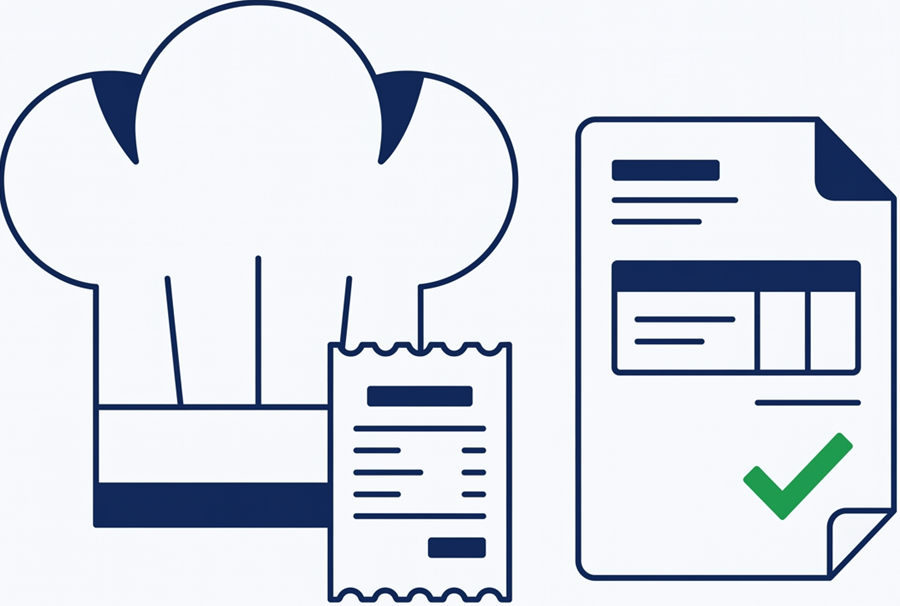
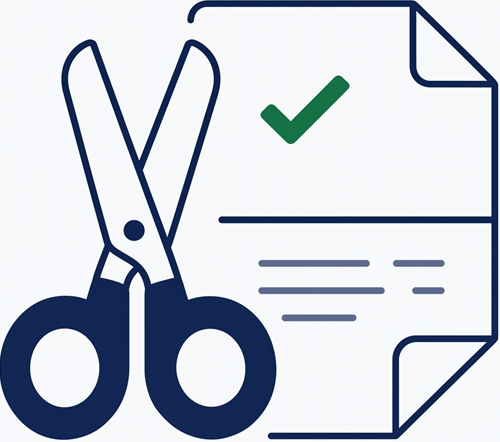
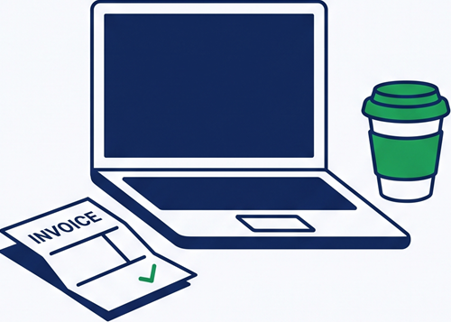
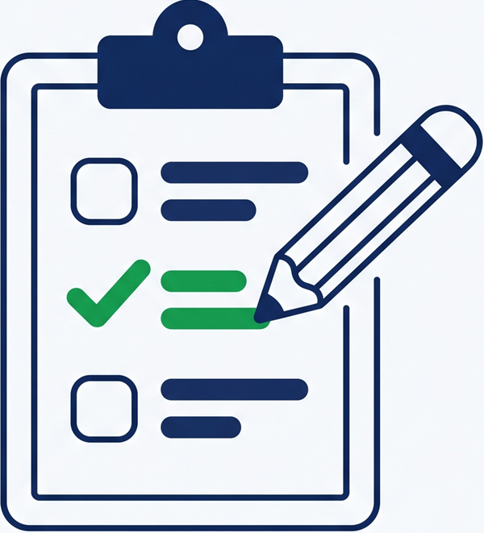

Vous déposez vos factures PDF. Nous vous accompagnons jusqu'à leur transmission conforme, avec un interlocuteur humain basé à Aix-en-Provence.

Accompagnement humain
Un interlocuteur vous aide à préparer vos factures, à les vérifier et à suivre leur transmission.
La réforme avance par étapes. Si vous avez peur de vous tromper ou si vous manquez de temps, nous vous aidons à faire les choses simplement :
Les nouvelles règles sont difficiles à comprendre. Nous vérifions vos informations avec vous avant toute transmission.
Grippen, Vega, GmVet, Popina, Ikosoft… Vous pouvez garder votre logiciel métier et déposer vos factures PDF dans notre dossier.
Nous vous alertons lorsqu'une facture rencontre un problème et vous expliquons quoi faire, sans vous laisser chercher seul.
Le principe : un dossier sur votre ordinateur. Vous déposez vos PDF, nous vous guidons pour le reste.

Continuez à utiliser votre logiciel métier. Exportez votre facture en PDF puis déposez-la dans votre dossier FactuSerein.

Notre double lecture (visuelle + texte) extrait vos champs et les affiche à côté de votre facture : montants, TVA, SIREN, dates. Vous comparez, corrigez si besoin, cliquez « Envoyer ». En cas de doute, un badge vous le signale.

Votre facture est préparée selon les règles françaises, vérifiée avant transmission puis suivie jusqu'à son traitement. Vous êtes alerté si un problème arrive.
Votre logiciel métier n'est pas conforme ? Nous ne vous demandons pas de le quitter : nous créons le pont conforme entre votre outil et la plateforme agréée.

Grippen, EdiBati, Onaya, Tolteck, Obat, Costructor, Hyspeed… Vos devis et factures restent sur votre outil : le dépôt se fait en quelques secondes.

Vega, GmVet, Dr Veto, Compta Idel, Hopitalia… Kinés, infirmiers, vétérinaires : la facturation B2B (fournisseurs, cliniques) doit passer à l'électronique.

Popina, Loyco, Logicone… Le ticket B2C reste libre, mais vos factures B2B (traiteurs, fournisseurs, événementiel) sont concernées dès 2026-2027.

Ikosoft, Planity, Zenio… Ventes au particulier = e-reporting ; achats B2B = factures électroniques à recevoir. On vous couvre des deux côtés.
Garages (OneGest, Gestauto), agences immobilières (Gestilo, DigitImmo), associations (AssoConnect), grossistes (Gespro, Gestimum)…

Zervant, Henrri, Freebe, Zoho Invoice, Facture.net… Votre outil n'est pas une plateforme agréée : notre dossier conforme prend le relais sans changer votre quotidien.
Formule annuelle prépayée, zéro frais d'initialisation, remboursement intégral sous 14 jours.
24 € /mois HT
Mensuel 28,80 € TTC · Annuel 264 € HT (1 mois offert) · remboursement 14 jours
59 € /mois HT
Mensuel 70,80 € TTC · Annuel 649 € HT (1 mois offert) · remboursement 14 jours
Offre sur-mesure au-delà de 1 000 factures / mois (PME, ETI). Commission possible pour les experts-comptables : nous contacter.
Téléchargez l'application, créez votre compte en quelques étapes guidées — ou vérifiez d'abord votre situation gratuitement.

Répondez à 6 questions (logiciel utilisé, volume, B2B/B2C, statut TVA). Vous recevez un diagnostic sous 24 h ouvrées, sans engagement.
Compatible Windows 10 et 11. Installez, créez votre compte en quelques étapes guidées, déposez vos factures — le reste est pris en charge.
Toute entreprise assujettie à la TVA établie en France est concernée, quelle que soit sa taille (TPE, micro-entrepreneur, franchise en base de TVA incluse). Depuis le 1er septembre 2026, vous devez pouvoir recevoir des factures électroniques via une plateforme agréée. Au 1er septembre 2027, vous devrez émettre vos factures B2B au format électronique et transmettre vos données (e-reporting pour les ventes aux particuliers et l'international).
Vous nous transmettez vos factures PDF et nous vous accompagnons étape par étape : préparation, vérification, transmission et suivi. Vous gardez votre logiciel métier et vous avez un interlocuteur humain en cas de question.
Si votre logiciel n'est pas immatriculé plateforme agréée (la liste officielle est publique sur impots.gouv.fr), il ne peut pas transmettre vos factures au format officiel. Notre solution crée le pont : vous gardez votre outil, vous déposez vos factures, nous les envoyons conformément. Aucun changement d'outil, aucune double saisie obligatoire.
Défaut de réception : amende de 500 €, puis 1 000 € par trimestre après mise en demeure. Défaut d'émission : 50 € par facture (plafond 15 000 €/an), et 500 € par transmission manquante pour l'e-reporting. Une clause de bienveillance exonère la première infraction si elle est réparée spontanément ou sous 30 jours — mais la mise en conformité prend du temps (choix, paramétrage, tests). Mieux vaut être prêt que de négocier.
Oui. Vos fichiers sont chiffrés en transit, hébergés en France, et ne servent qu'à la mise en conformité de vos factures. La plateforme agréée partenaire est immatriculée DGFiP et certifiée ISO 27001. Détails dans notre politique de confidentialité et nos CGV.
Formule mensuelle : oui, à tout moment (mois en cours dû). Formule annuelle : remboursement intégral sous 14 jours, puis engagement jusqu'au terme de l'année (1 mois offert). Vos factures déjà transmises restent archivées conformément à la réglementation (10 ans) sur la plateforme agréée.
Réponse sous 24 h ouvrées. Diagnostic de conformité gratuit et sans engagement : 6 questions, 2 minutes.